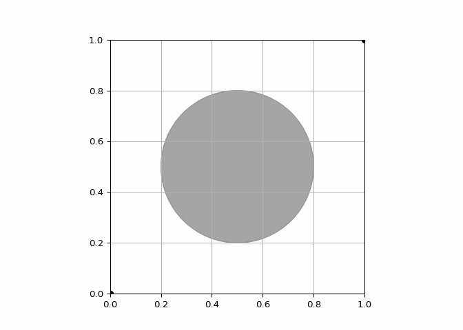

We are building a snake robot. This snake robot moves in a plane and has 5 joints, making it a redundant robot. We are using this redundancy to mimic the motion of real snakes.
Leaving ùëè = 0 within the Jacobian pseudoinverse. Implementing the numerical inverse kinematics algorithm to find the inverse kinematics solutions when:
Case 1: ùêø = 1 and the desired end-effector pose is:
At each iteration we first plot the robot and save a video frame. Then we calculate the Jacobian and perform numerical inverse kinematics. The loop terminates when the actual pose is close to the desired pose.
MATLAB implementation
closeallclearclc% create figurefigureaxis([-6,6,-6,6])gridonholdon% save as a video filev=VideoWriter('Inverse_Kinematics_1.mp4','MPEG-4');v.FrameRate=25;open(v);% initial joint valuesL=1;theta= [pi/8;pi/8;pi/8;pi/8;pi/8];S1= [001000]';S2= [0010-1*L0]';S3= [0010-2*L0]';S4= [0010-3*L0]';S5= [0010-4*L0]';S_eq= [S1,S2,S3,S4,S5];M= [eye(3), [5*L;0;0];0001];M1= [eye(3), [1*L;0;0];0001];M2= [eye(3), [2*L;0;0];0001];M3= [eye(3), [3*L;0;0];0001];M4= [eye(3), [4*L;0;0];0001];% Given desired Transformation matrices T_dT_d= [rotz(pi/4), [3;2;0];0001];Xd= [r2axisangle(T_d(1:3,1:3));T_d(1:3,4)];% T with initial joint positionsT=fk(M,S_eq,theta);X= [r2axisangle(T(1:3,1:3));T(1:3,4)];whilenorm(Xd-X) >1e-2p0= [0;0];% plot the robotT1=fk(M1,S1,theta(1));% 1. get the position of each linkT2=fk(M2, [S1,S2], [theta(1),theta(2)]);T3=fk(M3, [S1,S2,S3], [theta(1),theta(2),theta(3)]);T4=fk(M4, [S1,S2,S3,S4], [theta(1),theta(2),theta(3),theta(4)]);P_v= [p0,T1(1:2,4),T2(1:2,4),T3(1:2,4),T4(1:2,4),T(1:2,4)];cla;% 2. draw the robot and save the frameplot(P_v(1,:),P_v(2,:),'o-','color',[1,0.5,0],'linewidth',4)drawnowframe=getframe(gcf);writeVideo(v,frame);% My Implementation for inverse kinematics calculation belowJS=JacS(S_eq,theta);% Updated Space JacobianJb=adjointM(inv(T))*JS;%Updated Body JacobianJ= [T(1:3,1:3) zeros(3);zeros(3) T(1:3,1:3)] *Jb;% Updated Geometric JacobianV=Xd-X;delta_theta=pinv(J)*V+(eye(5) -pinv(J)*J)*[0;0;0;0;0];theta=double(theta+0.1*delta_theta);% Updating theta until the while loop is satisfied to get the desired joint positionsT=fk(M,S_eq,theta);X= [r2axisangle(T(1:3,1:3));T(1:3,4)];endclose(v);closeall
Result:
Case 2: ùêø = 1 and the desired end-effector pose is:
closeallclearclc% create figurefigureaxis([-6,6,-6,6])gridonholdon% save as a video filev=VideoWriter('Inverse_Kinematics_2.mp4','MPEG-4');v.FrameRate=25;open(v);% initial joint valuesL=1;theta= [pi/8;pi/8;pi/8;pi/8;pi/8];S1= [001000]';S2= [0010-1*L0]';S3= [0010-2*L0]';S4= [0010-3*L0]';S5= [0010-4*L0]';S_eq= [S1,S2,S3,S4,S5];M= [eye(3), [5*L;0;0];0001];M1= [eye(3), [1*L;0;0];0001];M2= [eye(3), [2*L;0;0];0001];M3= [eye(3), [3*L;0;0];0001];M4= [eye(3), [4*L;0;0];0001];% Given desired Transformation matrices T_dT_d= [rotz(pi/4), [-2;4;0];0001];Xd= [r2axisangle(T_d(1:3,1:3));T_d(1:3,4)];% T with initial joint positionsT=fk(M,S_eq,theta);X= [r2axisangle(T(1:3,1:3));T(1:3,4)];whilenorm(Xd-X) >1e-2p0= [0;0];% plot the robotT1=fk(M1,S1,theta(1));% 1. get the position of each linkT2=fk(M2, [S1,S2], [theta(1),theta(2)]);T3=fk(M3, [S1,S2,S3], [theta(1),theta(2),theta(3)]);T4=fk(M4, [S1,S2,S3,S4], [theta(1),theta(2),theta(3),theta(4)]);P_v= [p0,T1(1:2,4),T2(1:2,4),T3(1:2,4),T4(1:2,4),T(1:2,4)];cla;% 2. draw the robot and save the frameplot(P_v(1,:),P_v(2,:),'o-','color',[1,0.5,0],'linewidth',4)drawnowframe=getframe(gcf);writeVideo(v,frame);% My Implementation for inverse kinematics calculation belowJS=JacS(S_eq,theta);% Updated Space JacobianJb=adjointM(inv(T))*JS;%Updated Body JacobianJ= [T(1:3,1:3) zeros(3);zeros(3) T(1:3,1:3)] *Jb;% Updated Geometric JacobianV=Xd-X;delta_theta=pinv(J)*V+(eye(5) -pinv(J)*J)*[0;0;0;0;0];theta=double(theta+0.1*delta_theta);% Updating theta until the while loop is satisfied to get the desired joint positionsT=fk(M,S_eq,theta);X= [r2axisangle(T(1:3,1:3));T(1:3,4)];endclose(v);closeall
Result:
Case 3: ùêø = 1 and the desired end-effector pose is:
closeallclearclc% create figurefigureaxis([-6,6,-6,6])gridonholdon% save as a video filev=VideoWriter('Inverse_Kinematics_3.mp4','MPEG-4');v.FrameRate=25;open(v);% initial joint valuesL=1;theta= [pi/8;pi/8;pi/8;pi/8;pi/8];S1= [001000]';S2= [0010-1*L0]';S3= [0010-2*L0]';S4= [0010-3*L0]';S5= [0010-4*L0]';S_eq= [S1,S2,S3,S4,S5];M= [eye(3), [5*L;0;0];0001];M1= [eye(3), [1*L;0;0];0001];M2= [eye(3), [2*L;0;0];0001];M3= [eye(3), [3*L;0;0];0001];M4= [eye(3), [4*L;0;0];0001];% Given desired Transformation matrices T_dT_d= [rotz(0), [3;-1;0];0001];Xd= [r2axisangle(T_d(1:3,1:3));T_d(1:3,4)];% T with initial joint positionsT=fk(M,S_eq,theta);X= [r2axisangle(T(1:3,1:3));T(1:3,4)];whilenorm(Xd-X) >1e-2p0= [0;0];% plot the robotT1=fk(M1,S1,theta(1));% 1. get the position of each linkT2=fk(M2, [S1,S2], [theta(1),theta(2)]);T3=fk(M3, [S1,S2,S3], [theta(1),theta(2),theta(3)]);T4=fk(M4, [S1,S2,S3,S4], [theta(1),theta(2),theta(3),theta(4)]);P_v= [p0,T1(1:2,4),T2(1:2,4),T3(1:2,4),T4(1:2,4),T(1:2,4)];cla;% 2. draw the robot and save the frameplot(P_v(1,:),P_v(2,:),'o-','color',[1,0.5,0],'linewidth',4)drawnowframe=getframe(gcf);writeVideo(v,frame);% My Implementation for inverse kinematics calculation belowJS=JacS(S_eq,theta);% Updated Space JacobianJb=adjointM(inv(T))*JS;%Updated Body JacobianJ= [T(1:3,1:3) zeros(3);zeros(3) T(1:3,1:3)] *Jb;% Updated Geometric JacobianV=Xd-X;delta_theta=pinv(J)*V+(eye(5) -pinv(J)*J)*[0;0;0;0;0];theta=double(theta+0.1*delta_theta);% Updating theta until the while loop is satisfied to get the desired joint positionsT=fk(M,S_eq,theta);X= [r2axisangle(T(1:3,1:3));T(1:3,4)];endclose(v);closeall
Result:
Jacobian Pseudoinverse and Redundancy
This problem continues exploring the redundant snake robot used simulated above. So far we have left ùëè = 0 in our Jacobian pseudoinverse. More generally, choosing ùëè allows us to set a secondary objective for the inverse kinematics of redundant robots.
Here we establish that numerical inverse kinematics finds a solution for ùúÉ such that ùëáùë†ùëè (ùúÉ) equals the desired end-effector pose. But when working with redundant robots, multiple solutions are often possible. Choosing ùëè affects which of these solutions the algorithm selects.
Now I set ùëè as the following vector (and update ùëè as ùúÉ1 changes):
b = [[-theta(0) 0 0 0 0]], (6x1) vector
Equation: del_theta = pinv(J)V + (I - pinv(J)J)*b
Here we change the delta_theta by manipulating the pseudoinverse and introducing the null-space
Note: b was a zero vector till now for all the three cases, but now we will notice the change for Case 3:
closeallclearclc% create figurefigureaxis([-6,6,-6,6])gridonholdon% save as a video filev=VideoWriter('Inverse_Kinematics_3_null_space.mp4','MPEG-4');v.FrameRate=25;open(v);% initial joint valuesL=1;theta= [pi/8;pi/8;pi/8;pi/8;pi/8];S1= [001000]';S2= [0010-1*L0]';S3= [0010-2*L0]';S4= [0010-3*L0]';S5= [0010-4*L0]';S_eq= [S1,S2,S3,S4,S5];M= [eye(3), [5*L;0;0];0001];M1= [eye(3), [1*L;0;0];0001];M2= [eye(3), [2*L;0;0];0001];M3= [eye(3), [3*L;0;0];0001];M4= [eye(3), [4*L;0;0];0001];% Given desired Transformation matrices T_dT_d= [rotz(0), [3;-1;0];0001];Xd= [r2axisangle(T_d(1:3,1:3));T_d(1:3,4)];% T with initial joint positionsT=fk(M,S_eq,theta);X= [r2axisangle(T(1:3,1:3));T(1:3,4)];whilenorm(Xd-X) >1e-2p0= [0;0];% plot the robotT1=fk(M1,S1,theta(1));% 1. get the position of each linkT2=fk(M2, [S1,S2], [theta(1),theta(2)]);T3=fk(M3, [S1,S2,S3], [theta(1),theta(2),theta(3)]);T4=fk(M4, [S1,S2,S3,S4], [theta(1),theta(2),theta(3),theta(4)]);P_v= [p0,T1(1:2,4),T2(1:2,4),T3(1:2,4),T4(1:2,4),T(1:2,4)];cla;% 2. draw the robot and save the frameplot(P_v(1,:),P_v(2,:),'o-','color',[1,0.5,0],'linewidth',4)drawnowframe=getframe(gcf);writeVideo(v,frame);% My Implementation for inverse kinematics calculation belowJS=JacS(S_eq,theta);% Updated Space JacobianJb=adjointM(inv(T))*JS;%Updated Body JacobianJ= [T(1:3,1:3) zeros(3);zeros(3) T(1:3,1:3)] *Jb;% Updated Geometric JacobianV=Xd-X;delta_theta=pinv(J)*V+(eye(5) -pinv(J)*J)*[-theta(1);0;0;0;0];theta=double(theta+0.1*delta_theta);% Updating theta until the while loop is satisfied to get the desired joint positionsT=fk(M,S_eq,theta);X= [r2axisangle(T(1:3,1:3));T(1:3,4)];endclose(v);closeall
Result:
The final joint positions (approximately):
Case 3 with ùëè = 0: ùúÉ = [−1.51 0.29 1.36 0.78 −0.92]^ùëá
Case 3 with ùëè = ‚àíùúÉ1: ùúÉ = [−0.38 −1.40 1.20 1.70 −1.12]^ùëá
Comparing these two results, we have that |ùúÉ1| is smaller (and ùúÉ1 is closer to zero) with the secondary objective:
0.38 < 1.51
There are several reasons why we may want to minimize a joint angle:
• The actuator at that joint moves more slowly than the other actuators.
• Moving the actuator at that joint consumes more power as compared to the other actuators along the robot arm.
• We want to avoid colliding with an obstacle, and we need to keep one or more joints at a specific angle to avoid that obstacle
Potential Fields in Motion Planning
Here I will use potential fields to get a motion plan for the 2-DoF environment shown below. Here the drone‚Äôs position is ùúÉ = [ùë•, ùë¶]^ùëá.
‚Ä¢ The first obstacle has center ùëê1 = [0.3, 0.5]^ùëá and radius ùëü1 = 0.125
‚Ä¢ The second obstacle has center ùëê2 = [0.7, 0.5]^ùëá and radius ùëü2 = 0.225
NOTE: Always start with a low learning rate ùõº in your g
Code
import numpy as npimport matplotlibmatplotlib.use('Agg') # Set the backend to a non-interactive backendimport matplotlib.pyplot as pltfrom matplotlib.animation import FuncAnimation, PillowWriter# Parameterstheta_start = np.array([0.0, 0.0])theta_goal = np.array([1.0, 1.0])centers = np.array([[0.3, 0.5], [0.7, 0.5]])radii = np.array([0.125, 0.225])# Function to compute potential fielddef field(theta, theta_goal, centers, radii): U =0.5* np.linalg.norm(theta_goal - theta)**2for idx inrange(len(radii)): center = centers[idx] radius = radii[idx] dist = np.linalg.norm(center - theta)if dist < radius: U +=0.5* (1/dist -1/radius)**2return U# Initialize figurefig, ax = plt.subplots()ax.grid(True)# Drawing circlesfor idx inrange(len(radii)): circle = plt.Circle(centers[idx], radii[idx], color=[0.5, 0.5, 0.5], fill=False) ax.add_patch(circle)# Start and goal pointsax.plot(theta_start[0], theta_start[1], 'ko', markerfacecolor='k')ax.plot(theta_goal[0], theta_goal[1], 'ko', markerfacecolor='k')ax.axis('equal')# Parameters for gradient descenttheta = theta_startdelta =0.01# Adjusted delta valuelearning_rate =0.01# Adjusted learning ratepath = [theta_start] # To store the path# Animation update functiondef update(frame):global thetaif np.linalg.norm(theta - theta_goal) <0.1:return U = field(theta, theta_goal, centers, radii) U1 = field(theta + np.array([delta, 0.0]), theta_goal, centers, radii) U2 = field(theta + np.array([0.0, delta]), theta_goal, centers, radii) Ugrad = np.array([U1 - U, U2 - U]) / delta theta -= learning_rate * Ugrad path.append(theta.copy()) ax.plot([p[0] for p in path], [p[1] for p in path], 'o', color=[1, 0.5, 0], markerfacecolor=[1, 0.5, 0])# Create animationani = FuncAnimation(fig, update, frames=np.arange(300), repeat=False)# Save to GIF using PillowWritergif_path ='Potential_Field.gif'ani.save(gif_path, writer=PillowWriter(fps=30))
MATLAB implementation
clearcloseall% Parameterstheta_start= [0;0];theta_goal= [1;1];centers= [.3,.7;.5,.5];radii= [.125,.225];% Create figurefiguregridonholdonforidx=1:length(radii)viscircles(centers(:,idx)',radii(idx),'Color', [0.5,0.5,0.5]);endplot(theta_start(1),theta_start(2),'ko','MarkerFaceColor','k')plot(theta_goal(1),theta_goal(2),'ko','MarkerFaceColor','k')axisequal% Gradient descent down potential fieldtheta=theta_start;delta=0.01;learning_rate=0.01;foridx=1:1000ifnorm(theta-theta_goal) <0.1breakendU=field(theta,theta_goal,centers,radii);U1=field(theta+ [delta;0],theta_goal,centers,radii);U2=field(theta+ [0;delta],theta_goal,centers,radii);Ugrad= [U1-U;U2-U] /delta;theta=theta-learning_rate*Ugrad;plot(theta(1),theta(2),'o','color', [1,0.5,0],...'MarkerFaceColor', [1,0.5,0])end% Find potential field at position thetafunctionU=field(theta,theta_goal,centers,radii)U=0.5*norm(theta_goal-theta)^2;foridx=1:length(radii)center=centers(:,idx);radius=radii(idx);dist=norm(center-theta);ifdist<radiusU=U+0.5* (1/dist-1/radius)^2;endendend
Result:
Modifying the position of the obstacles so that a valid plan from ùúÉùë†ùë°ùëéùëüùë° to ùúÉùëîùëúùëéùëô exists but the potential fields planner fails (i.e., gets stuck). Below is the simulation that shows the obstacles and the failed motion plan.
There are many possible solutions. For instance, I am setting ùëê1 = [0.4, 0.5]^ùëá.
Motion Plan Failure
Code
import numpy as npimport matplotlibmatplotlib.use('Agg') # Set the backend to a non-interactive backendimport matplotlib.pyplot as pltfrom matplotlib.animation import FuncAnimation, PillowWriter# Parameterstheta_start = np.array([0.0, 0.0])theta_goal = np.array([1.0, 1.0])centers = np.array([[0.4, 0.5], [0.5, 0.5]])radii = np.array([0.125, 0.225])# Function to compute potential fielddef field(theta, theta_goal, centers, radii): U =0.5* np.linalg.norm(theta_goal - theta)**2for idx inrange(len(radii)): center = centers[idx] radius = radii[idx] dist = np.linalg.norm(center - theta)if dist < radius: U +=0.5* (1/dist -1/radius)**2return U# Initialize figurefig, ax = plt.subplots()ax.grid(True)# Drawing circlesfor idx inrange(len(radii)): circle = plt.Circle(centers[idx], radii[idx], color=[0.5, 0.5, 0.5], fill=False) ax.add_patch(circle)# Start and goal pointsax.plot(theta_start[0], theta_start[1], 'ko', markerfacecolor='k')ax.plot(theta_goal[0], theta_goal[1], 'ko', markerfacecolor='k')ax.axis('equal')# Parameters for gradient descenttheta = theta_startdelta =0.01# Adjusted delta valuelearning_rate =0.01# Adjusted learning ratepath = [theta_start] # To store the path# Animation update functiondef update(frame):global thetaif np.linalg.norm(theta - theta_goal) <0.1:return U = field(theta, theta_goal, centers, radii) U1 = field(theta + np.array([delta, 0.0]), theta_goal, centers, radii) U2 = field(theta + np.array([0.0, delta]), theta_goal, centers, radii) Ugrad = np.array([U1 - U, U2 - U]) / delta theta -= learning_rate * Ugrad path.append(theta.copy()) ax.plot([p[0] for p in path], [p[1] for p in path], 'o', color=[1, 0.5, 0], markerfacecolor=[1, 0.5, 0])# Create animationani = FuncAnimation(fig, update, frames=np.arange(300), repeat=False)# Save to GIF using PillowWritergif_path ='Potential_Field_fail.gif'ani.save(gif_path, writer=PillowWriter(fps=30))
MATLAB Implementation
clearcloseall% Start and goal environmentstheta_start= [0;0];theta_goal= [1;1];% Modified obstacle positions and sizesobs_c21= [0.3;0.5];% Shifted first obstacle closer to the secondobs_r21=0.15;% Slightly increased radiusobs_c22= [0.8;0.5];% Shifted second obstacle closer to the firstobs_r22=0.25;% Slightly increased radius% Visualize the environmentfiguregridonholdonaxis([0,1,0,1])axisequalviscircles(obs_c21',obs_r21,'Color', [0.5,0.5,0.5]);viscircles(obs_c22',obs_r22,'Color', [0.5,0.5,0.5]);plot(0,0,'ko','MarkerFaceColor','k');plot(1,1,'ko','MarkerFaceColor','k');% Setting the variablesalpha=0.01;epsilon=0.1;delta=0.01;% Initial trajectorytheta(:,1) =theta_start;t=1;del_Unet=1;whilenorm(del_Unet)>epsilondel_Ux=U_theta(theta(:,t) + [delta;0]);del_Uy=U_theta(theta(:,t)+ [0;delta]);del_U=U_theta(theta(:,t));del_Unet=[del_Ux-del_U;del_Uy-del_U]/delta;theta(:,t+1)=theta(:,t)-alpha*del_Unet;t=t+1;endgridonholdonaxisequalplot(theta(1,:),theta(2,:),'o-',...'Color', [1,0.5,0],'LineWidth',2);functionU=U_theta(theta) beta=2;gamma=1;theta_goal= [1;1];% Modified obstacle positions and sizesobs_c21= [0.3;0.5];% Update obstacle parametersobs_r21=0.15;obs_c22= [0.6;0.5];obs_r22=0.25;Urep1=0;Urep2=0;Uatt=0.5*beta*norm(theta_goal-theta)^2;ifnorm(obs_c21-theta)<=obs_r21Urep1=0.5*gamma*((1/norm(obs_c21-theta))- (1/obs_r21))^2;endifnorm(obs_c22-theta)<=obs_r22Urep2=0.5*gamma*((1/norm(obs_c22-theta))- (1/obs_r22))^2;endUrep=Urep1+Urep2;disp(Urep);U=Uatt+Urep;end
Result:
This failure occurs because the robot uses gradient descent to move towards decreasing potential energy, and the robot gets trapped in a local minimum.
In this modification, the obstacles are placed closer to each other, potentially creating a narrow corridor that the drone might not be able to navigate due to the combined repulsive forces. This setup can result in the planner getting stuck in a local minimum, where the drone is unable to progress towards the goal. Thus, we place a local minimim in between the start and goal. Gradient descent can only climb “down” so if it’s surrounded by high gradients, it can’t escape.
Trajectory Optimization
MATLAB Implementations
Here we are using trajectory optimization to perform motion planning in 2-DoF environments. As before, the mobile robot‚Äôs position is ùúÉ = [ùë•, ùë¶]^ùëá.
Implementing the trajectory optimization algorithm Below. My code should be able to work with an arbitrary number of waypoints and circular obstacles.
Environment 1: One obstacle with center ùëê1 = [0.2, 0.35]^ùëá and radius ùëü1 = 0.2. A second obstacle with center ùëê2 = [0.5, 0.3]^ùëá and radius ùëü2 = 0.2. A third obstacle with center ùëê3 = [0.7, 0.5]^ùëá and radius ùëü3 = 0.2. Setting ùëò = 20.
Environment 2: One obstacle with center ùëê1 = [0.5, 0.3]^ùëá and radius ùëü1 = 0.3. A second obstacle with center ùëê2 = [0.5, 0.7]^ùëá and radius ùëü2 = 0.2. Setting ùëò = 15.
Environment 3: One obstacle with center ùëê1 = [0.55, 0.5]^ùëá and radius ùëü1 = 0.3. Trajectory should have ùëò = 10 waypoints.
MATLAB implementation
clearcloseall% start and goaltheta_start= [0;0];theta_goal= [1;1];centers= [0.55;0.5];radii=0.3;% initial trajectoryn=2;k=10;xi_0= [linspace(theta_start(1),theta_goal(1),k);...linspace(theta_start(2),theta_goal(2),k)];xi_0_vec=reshape(xi_0, [],1);% start and goal equality constraintsA= [eye(n) zeros(n,n*(k-1));...zeros(n,n*(k-1)),eye(n)];B= [theta_start;theta_goal];% nonlinear optimizationoptions=optimoptions('fmincon','Display','final',...'Algorithm','sqp','MaxFunctionEvaluations',1e5);xi_star_vec=fmincon(@(xi) cost(xi,centers,radii),xi_0_vec,... [], [],A,B, [], [], [],options);xi_star=reshape(xi_star_vec,2, []);% plot resultfiguregridonholdonaxisequalforidx=1:length(radii)viscircles(centers(:,idx)',radii(idx),'Color', [0.5,0.5,...0.5]);endplot(xi_0(1,:),xi_0(2,:),'o-','Color', [0.3,0.3,...0.3],'LineWidth',3);plot(xi_star(1,:),xi_star(2,:),'o-','Color', [1,0.5,...0],'LineWidth',3);% cost function to minimizefunctionC=cost(xi,centers,radii)xi=reshape(xi,2, []);C=0;foridx=2:length(xi)theta_curr=xi(:,idx);theta_prev=xi(:,idx-1);C=C+norm(theta_curr-theta_prev)^2;forjdx=1:length(radii)center=centers(:,jdx);radius=radii(jdx);ifnorm(theta_curr-center) <radiusC=C+0.5*(1/norm(theta_curr-center) -1/radius)^2;endendendend
Result
Legend: Here, in all the three environments the gray line is the initial trajectory ùúâ^0, while the orange line is the optimal trajectory ùúâ.
Special Scenario
Consider an environment with two obstacles:
ùúÉùë†ùë°ùëéùëüùë° = [0, 0]^ùëá and ùúÉùëîùëúùëéùëô = [1, 1]^ùëá.
First obstacle with center ùëê1 = [0.4, 0.6]^ùëá and radius ùëü1 = 0.2.
Second obstacle with center ùëê2 = [0.6, 0.4]^ùëá and radius ùëü2 = 0.2.
The trajectory ùúâ should have ùëò = 20 waypoints.
Modifying the initial trajectory ùúâ^0 so that the optimal trajectory goes around both obstacles.
Solution:
For this environment an initial trajectory ùúâ^0 that moves straight from start to goal gets stuck. The nonlinear optimizer cannot find a way to modify this initial trajectory to decrease the cost (i.e., we are stuck in a local minima), and so the final answer simply jumps across the obstacles. We can fix this problem by choosing an initial trajectory that moves either above or below the obstacles.
This results in an optimal trajectory ùúâ that goes above both obstacles. See the figure below. If you selected an initial trajectory that caused the robot to converge to a path below both obstacles, that is also fine.
Result
RRT Algorithm
The path plan should actually work on a robot. If the path plan makes the robot turn at sharp angles but the robot can’t move at sharp angles (like a car), that path plan shouldn’t be allowed.
The path plan should be as close to optimal as possible. While it’s nice to find any path plan that gets the robot from a start location to a goal location, that isn’t enough unfortunately. We’d like something that’s somewhat efficient. Not only will it help the robot complete its task as fast as possible, but it’ll also conserve its precious battery life.
The path plan should avoid colliding with walls. This obviously goes without saying. Robots can be pretty expensive, and crashing is never a good thing. My little robot alone cost me well over a thousand bucks.
One of the most popular algorithms for coming up with a path plan that tries to satisfies these conditions is called Rapidly-exploring Random Trees (RRT). Since a picture is worth a thousand words, check out the diagram below. Let’s suppose the robot has to go from a start location (the red dot) to a goal location (the green dot) in a simple map without any obstacles. Basically, we’ll start off with a tree that has a root node representing the start position of the robot. After that, we’ll build the tree up gradually. How? We’ll take a bunch of random samples of the map, make a new node for each random sample, and insert each new node into the tree somehow. Once the tree has a node that’s close enough to the goal position of the robot, we’re done.
Here we are using the RRT algorithm to perform motion planning in 2-DoF environments. As before, the mobile robot‚Äôs position is ùúÉ = [ùë•, ùë¶]^ùëá.
Implementing the RRT algorithm below. This code should be able to work with an arbitrary number of circular obstacles with 2 conditions:
‚Ä¢ The bounds of the workspace are ùë• ∈ [0, 1], ùë¶ ∈ [0, 1] ‚Ä¢ The motion plan must end within ùúñ = 0.1 units of the goal
Code Implementation
Code
import numpy as npimport matplotlibmatplotlib.use('Agg') # Set the backend to a non-interactive backendimport matplotlib.pyplot as pltfrom matplotlib.patches import Circlefrom matplotlib.animation import PillowWriter, FuncAnimation# Define start and goal positionstheta_start = {'coord': np.array([0, 0]), 'parent': None}theta_goal = np.array([1, 1])# Workspace boundsx_bounds = [0, 1]y_bounds = [0, 1]# Define obstaclesobstacles = np.array([ [0.5, 0.3, 0.2], [0.7, 0.7, 0.2], [0.6, 0.4, 0.1], [0.4, 0.3, 0.2], [0.1, 0.75, 0.3]])# RRT parametersepsilon =0.1# Goal thresholddelta =0.05# Step sizeN =1000# Number of iterations# Initialize treeG = [theta_start]# Visualize environment setupfig, ax = plt.subplots()ax.grid(True)ax.set_xlim(x_bounds)ax.set_ylim(y_bounds)ax.set_aspect('equal')# Plot obstaclesfor obstacle in obstacles: circle = Circle(obstacle[0:2], obstacle[2], color='gray', fill=False) ax.add_patch(circle)# Plot start and goalstart_plot, = ax.plot(theta_start['coord'][0], theta_start['coord'][1], 'ko', markerfacecolor='k')goal_plot, = ax.plot(theta_goal[0], theta_goal[1], 'ko', markerfacecolor='k')# This flag is used to stop the animation once the goal is reachedgoal_reached =False# Animation update functiondef update(frame):global G, goal_reachedif goal_reached:return theta_rand = theta_goal if np.random.rand() <0.2else np.random.rand(2) distances = [np.linalg.norm(node['coord'] - theta_rand) for node in G] theta_near_index = np.argmin(distances) theta_near = G[theta_near_index] vec_to_rand = theta_rand - theta_near['coord'] vec_to_rand = delta * vec_to_rand / np.linalg.norm(vec_to_rand) theta_new = {'coord': theta_near['coord'] + vec_to_rand, 'parent': theta_near_index}ifnot is_collision(theta_new['coord'], obstacles): G.append(theta_new) ax.plot([theta_near['coord'][0], theta_new['coord'][0]], [theta_near['coord'][1], theta_new['coord'][1]], 'k-', linewidth=2) ax.plot(theta_new['coord'][0], theta_new['coord'][1], 'o', color='gray', markerfacecolor='gray')if np.linalg.norm(theta_new['coord'] - theta_goal) < epsilon:# Draw the final path in orange current = theta_newwhile current['parent'] isnotNone: parent = G[current['parent']] ax.plot([current['coord'][0], parent['coord'][0]], [current['coord'][1], parent['coord'][1]], color='orange', linewidth=3) current = parent goal_reached =True# Collision checking functiondef is_collision(coord, obstacles):returnany(np.linalg.norm(coord - obstacle[0:2]) < obstacle[2] for obstacle in obstacles)# Create the animationani = FuncAnimation(fig, update, frames=N, repeat=False)# Save the animation as a GIFgif_path ="RRT_main.gif"writer = PillowWriter(fps=20)ani.save(gif_path, writer=writer)# Close the plotplt.close()
MATLAB Implementation
clearcloseall% Define start and goal positionstheta_start.coord= [0;0];theta_goal= [1;1];% Workspace boundsx_bounds= [0,1];y_bounds= [0,1];% Define obstacles% Each row is an obstacle with format: [center_x, center_y, radius]obstacles= [0.5,0.3,0.2;0.7,0.7,0.2;0.6,0.4,0.1;0.4,0.3,0.2;0.1,0.75,0.3;% Add as many obstacles required, satisfying the condition of arbitrary% number of obstacles' inclusion];% RRT parametersepsilon=0.1;% Goal thresholddelta=0.05;% Step sizeN=1000;% Number of iterations% Visualize environmentfigureholdongridonaxis([x_bounds,y_bounds])axisequal% Plot obstaclesfori=1:size(obstacles,1)viscircles(obstacles(i,1:2),obstacles(i,3),'Color', [0.5,0.5,0.5]);end% Initialize treetheta_start.parent=0;G(1) =theta_start;% Main RRT loopforidx=1:Nifnorm(G(end).coord-theta_goal) <epsilonbreakend% Random sampletheta_rand=rand(2,1);% Nearest node [min_dist,theta_near_index] =min(vecnorm([G.coord] -theta_rand));theta_near=G(theta_near_index);% Step towards random samplevec_to_rand=theta_rand-theta_near.coord;ifnorm(vec_to_rand) >deltavec_to_rand=delta*vec_to_rand/norm(vec_to_rand);endtheta_new.coord=theta_near.coord+vec_to_rand;% Collision check with all obstaclesifisCollision(theta_new.coord,obstacles)continue;end% Add new node to treetheta_new.parent=theta_near_index;G= [G,theta_new];% Plottingplot(theta_new.coord(1),theta_new.coord(2),'o','Color', [0.5,0.5,0.5],...'MarkerFaceColor', [0.5,0.5,0.5]);line([theta_near.coord(1),theta_new.coord(1)], [theta_near.coord(2),theta_new.coord(2)],'Color','k','LineWidth',2);end% Trace back pathchild_theta=G(end);whilechild_theta.parent~=0parent_theta=G(child_theta.parent);line([child_theta.coord(1),parent_theta.coord(1)], [child_theta.coord(2),parent_theta.coord(2)],'Color', [1,0.5,0],'LineWidth',3);child_theta=parent_theta;end% Plot start and goalplot(theta_start.coord(1),theta_start.coord(2),'ko','MarkerFaceColor','k');plot(theta_goal(1),theta_goal(2),'ko','MarkerFaceColor','k');% Collision checking functionfunctioncollision=isCollision(coord,obstacles)collision=any(arrayfun(@(idx) norm(coord-obstacles(idx,1:2)') <obstacles(idx,3),1:size(obstacles,1)));end
Result
Notice that centers is a matrix where each column corresponds to an obstacle center. Similarly, radii is a vector where the ùëñ-th entry corresponds to the radius of the ùëñ-th obstacle.
Environment 1: One obstacle with center ùëê1 = [0.55, 0.5]^ùëá and radius ùëü1 = 0.3.
RRT Algorithm for 1 Obstacle
Code
import numpy as npimport matplotlibmatplotlib.use('Agg') # Set the backend to a non-interactive backendimport matplotlib.pyplot as pltfrom matplotlib.patches import Circlefrom matplotlib.animation import PillowWriter, FuncAnimation# Environmenttheta_start = {'coord': np.array([0, 0])}theta_goal = {'coord': np.array([1, 1])}centers = np.array([[0.5], [0.5]])radii = np.array([0.3])# Parametersepsilon =0.1delta =0.1N =1000# Initialize figurefig, ax = plt.subplots()ax.grid(True)ax.set_xlim(0, 1)ax.set_ylim(0, 1)ax.set_aspect('equal', adjustable='box')# Draw obstaclesfor idx inrange(len(radii)): circle = Circle(centers[:, idx], radii[idx], color=[0.5, 0.5, 0.5], alpha=0.7) ax.add_patch(circle)# Plot start and goalax.plot(0, 0, 'ko', markerfacecolor='k')ax.plot(1, 1, 'ko', markerfacecolor='k')# Initialize treetheta_start['parent'] =NoneG = [theta_start]final_path_plotted =Falsedef update(frame):global G, final_path_plottedif frame ==0or final_path_plotted:return# Sample random joint position theta_rand = np.random.rand(2)# Find node in G nearest to theta_rand dist = [np.linalg.norm(node['coord'] - theta_rand) for node in G] theta_near_index = np.argmin(dist) theta_near = G[theta_near_index]# Take a step from theta_near towards theta_rand vec_to_rand = theta_rand - theta_near['coord'] dist_to_rand = np.linalg.norm(vec_to_rand) theta_new = {}if dist_to_rand < delta: theta_new['coord'] = theta_randelse: theta_new['coord'] = theta_near['coord'] + delta * vec_to_rand / dist_to_rand# Check if theta_new is collision-free collision =Falsefor jdx inrange(len(radii)): center = centers[:, jdx] radius = radii[jdx]if np.linalg.norm(theta_new['coord'] - center) < radius: collision =Truebreakif collision:return# If collision-free, add theta_new to tree with parent theta_near theta_new['parent'] = theta_near_index G.append(theta_new)# Plot node and edge ax.plot(theta_new['coord'][0], theta_new['coord'][1], 'o', color=[0.5, 0.5, 0.5], markerfacecolor=[0.5, 0.5, 0.5]) ax.plot([theta_near['coord'][0], theta_new['coord'][0]], [theta_near['coord'][1], theta_new['coord'][1]], 'k-', linewidth=2)# If goal is close enough to the last node in G, plot the final pathif np.linalg.norm(G[-1]['coord'] - theta_goal['coord']) < epsilon: next_theta = G[-1]while next_theta['parent'] isnotNone: prev_theta = G[next_theta['parent']] line, = ax.plot([next_theta['coord'][0], prev_theta['coord'][0]], [next_theta['coord'][1], prev_theta['coord'][1]], 'orange', linewidth=3) next_theta = prev_theta# Add final path to the animation final_path_plotted =Truereturn line,# Create the animationani = FuncAnimation(fig, update, frames=N, repeat=False)# Save the animationwriter = PillowWriter(fps=20)ani.save("RRT_1_obstacles.gif", writer=writer)
Result:

Environment 2: One obstacle with center ùëê1 = [0.5, 0.3]^ùëá and radius ùëü1 = 0.3. A second obstacle with center ùëê2 = [0.5, 0.7]^ùëá and radius ùëü2 = 0.2.
RRT Algorithm for 2 Obstacles
Code
import numpy as npimport matplotlibmatplotlib.use('Agg') # Set the backend to a non-interactive backendimport matplotlib.pyplot as pltfrom matplotlib.patches import Circlefrom matplotlib.animation import PillowWriter, FuncAnimation# Environmenttheta_start = {'coord': np.array([0, 0])}theta_goal = {'coord': np.array([1, 1])}centers = np.array([[0.5, 0.3], [0.5, 0.7]])radii = np.array([0.3, 0.2])# Parametersepsilon =0.1delta =0.1N =1000# Initialize figurefig, ax = plt.subplots()ax.grid(True)ax.set_xlim(0, 1)ax.set_ylim(0, 1)ax.set_aspect('equal', adjustable='box')# Draw obstaclesfor idx inrange(len(radii)): circle = Circle(centers[:, idx], radii[idx], color=[0.5, 0.5, 0.5], alpha=0.7) ax.add_patch(circle)# Plot start and goalax.plot(0, 0, 'ko', markerfacecolor='k')ax.plot(1, 1, 'ko', markerfacecolor='k')# Initialize treetheta_start['parent'] =NoneG = [theta_start]final_path_plotted =Falsedef update(frame):global G, final_path_plottedif frame ==0or final_path_plotted:return# Sample random joint position theta_rand = np.random.rand(2)# Find node in G nearest to theta_rand dist = [np.linalg.norm(node['coord'] - theta_rand) for node in G] theta_near_index = np.argmin(dist) theta_near = G[theta_near_index]# Take a step from theta_near towards theta_rand vec_to_rand = theta_rand - theta_near['coord'] dist_to_rand = np.linalg.norm(vec_to_rand) theta_new = {}if dist_to_rand < delta: theta_new['coord'] = theta_randelse: theta_new['coord'] = theta_near['coord'] + delta * vec_to_rand / dist_to_rand# Check if theta_new is collision-free collision =Falsefor jdx inrange(len(radii)): center = centers[:, jdx] radius = radii[jdx]if np.linalg.norm(theta_new['coord'] - center) < radius: collision =Truebreakif collision:return# If collision-free, add theta_new to tree with parent theta_near theta_new['parent'] = theta_near_index G.append(theta_new)# Plot node and edge ax.plot(theta_new['coord'][0], theta_new['coord'][1], 'o', color=[0.5, 0.5, 0.5], markerfacecolor=[0.5, 0.5, 0.5]) ax.plot([theta_near['coord'][0], theta_new['coord'][0]], [theta_near['coord'][1], theta_new['coord'][1]], 'k-', linewidth=2)# If goal is close enough to the last node in G, plot the final pathif np.linalg.norm(G[-1]['coord'] - theta_goal['coord']) < epsilon: next_theta = G[-1]while next_theta['parent'] isnotNone: prev_theta = G[next_theta['parent']] line, = ax.plot([next_theta['coord'][0], prev_theta['coord'][0]], [next_theta['coord'][1], prev_theta['coord'][1]], 'orange', linewidth=3) next_theta = prev_theta# Add final path to the animation final_path_plotted =Truereturn line,# Create the animationani = FuncAnimation(fig, update, frames=N, repeat=False)# Save the animationwriter = PillowWriter(fps=20)ani.save("RRT_2_obstacles.gif", writer=writer)
Result:
Environment 3: One obstacle with center ùëê1 = [0.2, 0.35]^ùëá and radius ùëü1 = 0.2. A second obstacle with center ùëê2 = [0.5, 0.3]^ùëá and radius ùëü2 = 0.2. A third obstacle with center ùëê3 = [0.7, 0.5]^ùëá and radius ùëü3 = 0.2.
Here we are declaring it a Baseline Algorithm for 3 obstacles. Later below we will discuss the differences between a baseline and Goal-bias algorithm and their pros-cons.
Baseline RRT Algorithm
Code
import numpy as npimport matplotlibmatplotlib.use('Agg') # Set the backend to a non-interactive backendimport matplotlib.pyplot as pltfrom matplotlib.patches import Circlefrom matplotlib.animation import PillowWriter, FuncAnimation# Environmenttheta_start = {'coord': np.array([0, 0])}theta_goal = {'coord': np.array([1, 1])}centers = np.array([[0.2, 0.5, 0.7], [0.35, 0.3, 0.5]])radii = np.array([0.2, 0.2, 0.2])# Parametersepsilon =0.1delta =0.1N =1000# Initialize figurefig, ax = plt.subplots()ax.grid(True)ax.set_xlim(0, 1)ax.set_ylim(0, 1)ax.set_aspect('equal', adjustable='box')# Draw obstaclesfor idx inrange(len(radii)): circle = Circle(centers[:, idx], radii[idx], color=[0.5, 0.5, 0.5], alpha=0.7) ax.add_patch(circle)# Plot start and goalax.plot(0, 0, 'ko', markerfacecolor='k')ax.plot(1, 1, 'ko', markerfacecolor='k')# Initialize treetheta_start['parent'] =NoneG = [theta_start]final_path_plotted =Falsedef update(frame):global G, final_path_plottedif frame ==0or final_path_plotted:return# Sample random joint position theta_rand = np.random.rand(2)# Find node in G nearest to theta_rand dist = [np.linalg.norm(node['coord'] - theta_rand) for node in G] theta_near_index = np.argmin(dist) theta_near = G[theta_near_index]# Take a step from theta_near towards theta_rand vec_to_rand = theta_rand - theta_near['coord'] dist_to_rand = np.linalg.norm(vec_to_rand) theta_new = {}if dist_to_rand < delta: theta_new['coord'] = theta_randelse: theta_new['coord'] = theta_near['coord'] + delta * vec_to_rand / dist_to_rand# Check if theta_new is collision-free collision =Falsefor jdx inrange(len(radii)): center = centers[:, jdx] radius = radii[jdx]if np.linalg.norm(theta_new['coord'] - center) < radius: collision =Truebreakif collision:return# If collision-free, add theta_new to tree with parent theta_near theta_new['parent'] = theta_near_index G.append(theta_new)# Plot node and edge ax.plot(theta_new['coord'][0], theta_new['coord'][1], 'o', color=[0.5, 0.5, 0.5], markerfacecolor=[0.5, 0.5, 0.5]) ax.plot([theta_near['coord'][0], theta_new['coord'][0]], [theta_near['coord'][1], theta_new['coord'][1]], 'k-', linewidth=2)# If goal is close enough to the last node in G, plot the final pathif np.linalg.norm(G[-1]['coord'] - theta_goal['coord']) < epsilon: next_theta = G[-1]while next_theta['parent'] isnotNone: prev_theta = G[next_theta['parent']] line, = ax.plot([next_theta['coord'][0], prev_theta['coord'][0]], [next_theta['coord'][1], prev_theta['coord'][1]], 'orange', linewidth=3) next_theta = prev_theta# Add final path to the animation final_path_plotted =Truereturn line,# Create the animationani = FuncAnimation(fig, update, frames=N, repeat=False)# Save the animationwriter = PillowWriter(fps=20)ani.save("Baseline_RRT.gif", writer=writer)plt.show()
C:\Users\bhara\AppData\Local\Temp\ipykernel_3292\592816222.py:104: UserWarning: FigureCanvasAgg is non-interactive, and thus cannot be shown
plt.show()
MATLAB Implementation
clear
close all
% environment
theta_start.coord = [0; 0];
theta_goal.coord = [1; 1];
centers = [0.2, 0.5, 0.7; 0.35, 0.3, 0.5];
radii = [0.2, 0.2, 0.2];
% parameters
epsilon = 0.1;
delta = 0.1;
N = 1000;
% visualize environment
figure
grid on
hold on
axis([0, 1, 0, 1])
axis equal
for idx = 1:length(radii)
viscircles(centers(:, idx)', radii(idx), 'Color', [0.5, 0.5, ...
0.5]);
end
plot(0, 0, 'ko', 'MarkerFaceColor', 'k')
plot(1, 1, 'ko', 'MarkerFaceColor', 'k')
% initialize tree
theta_start.parent = 0;
G(1) = theta_start;
for idx = 1:N
% stop if theta_new is close to theta_goal
if norm(G(end).coord - theta_goal.coord) < epsilon
break
end
% sample random joint position
theta_rand = rand(2,1);
% find node in G nearest to theta_rand
dist = zeros(length(G), 1);
for jdx = 1:1:length(G)
dist(jdx) = norm(G(jdx).coord - theta_rand);
end
[~, theta_near_index] = min(dist);
theta_near = G(theta_near_index);
% take a step from theta_near towards theta_rand
vec_to_rand = theta_rand - theta_near.coord;
dist_to_rand = norm(vec_to_rand);
if dist_to_rand < delta
theta_new.coord = theta_rand;
else
theta_new.coord = theta_near.coord + delta * ...
vec_to_rand/dist_to_rand;
end
% check if theta_new is collision free
collision = false;
for jdx = 1:length(radii)
center = centers(:, jdx);
radius = radii(jdx);
if norm(theta_new.coord - center) < radius
collision = true;
end
end
if collision
continue
end
% if collision free, add theta_new to tree with parent theta_near
theta_new.parent = theta_near_index;
G = [G, theta_new];
% plot node and edge
plot(theta_new.coord(1), theta_new.coord(2), 'o', 'Color', [0.5, ...
0.5, 0.5], 'MarkerFaceColor', [0.5, 0.5, 0.5])
line([theta_near.coord(1), theta_new.coord(1)], ...
[theta_near.coord(2), theta_new.coord(2)], 'Color', 'k', 'LineWidth', ...
2);
end
% work backwards from the final node to the root of the tree
next_theta = G(end);
while next_theta.parent ~= 0
prev_theta_idx = next_theta.parent;
prev_theta = G(prev_theta_idx);
line([next_theta.coord(1), prev_theta.coord(1)], ...
[next_theta.coord(2), prev_theta.coord(2)], 'Color', [1, 0.5, ...
0], 'LineWidth', 3);
next_theta = prev_theta;
end
Result:
We can see the trajectory plots in the above figures. Here the black lines and gray dots show the tree ùê∫, while the orange line is the final motion plan from ùúÉùë†ùë°ùëéùëüùë° to a point close to the goal (ùúñ ‚⧠0.1). Each time we run your RRT code you should get a different solution: RRT builds the tree through random sampling.
Goal-Bias RRT Algorithm
This version will sample the goal more frequently (let‚Äôs refer to this as goal bias). For goal bias, with probability 0.2 set ùúÉùëüùëéùëõùëë as ùúÉùëîùëúùëéùëô. Otherwise sample randomly as normal. Run your code 10 times for baseline and 10 times for goal bias. Write down how many samples it takes on average to find a motion plan. Which approach is more sample-efficient: baseline or goal bias?
Let us check the implementation and results.
Goal-Bias RRT Implementation
Code
import numpy as npimport matplotlibmatplotlib.use('Agg') # Set the backend to a non-interactive backendimport matplotlib.pyplot as pltfrom matplotlib.patches import Circlefrom matplotlib.animation import PillowWriter, FuncAnimation# Environmenttheta_start = {'coord': np.array([0, 0])}theta_goal = {'coord': np.array([1, 1])}centers = np.array([[0.2, 0.5, 0.7], [0.35, 0.3, 0.5]])radii = np.array([0.2, 0.2, 0.2])# Parametersepsilon =0.1delta =0.1N =1000# Initialize figurefig, ax = plt.subplots()ax.grid(True)ax.set_xlim(0, 1)ax.set_ylim(0, 1)ax.set_aspect('equal', adjustable='box')# Draw obstaclesfor idx inrange(len(radii)): circle = Circle(centers[:, idx], radii[idx], color=[0.5, 0.5, 0.5], alpha=0.7) ax.add_patch(circle)# Plot start and goalax.plot(0, 0, 'ko', markerfacecolor='k')ax.plot(1, 1, 'ko', markerfacecolor='k')# Initialize treetheta_start['parent'] =NoneG = [theta_start]final_path_plotted =Falsedef update(frame):global G, final_path_plottedif frame ==0or final_path_plotted:return# Sample random joint positionif np.random.rand() <0.2: theta_rand = theta_goal['coord']else: theta_rand = np.random.rand(2)# Find node in G nearest to theta_rand dist = [np.linalg.norm(node['coord'] - theta_rand) for node in G] theta_near_index = np.argmin(dist) theta_near = G[theta_near_index]# Take a step from theta_near towards theta_rand vec_to_rand = theta_rand - theta_near['coord'] dist_to_rand = np.linalg.norm(vec_to_rand) theta_new = {}if dist_to_rand < delta: theta_new['coord'] = theta_randelse: theta_new['coord'] = theta_near['coord'] + delta * vec_to_rand / dist_to_rand# Check if theta_new is collision-free collision =Falsefor jdx inrange(len(radii)): center = centers[:, jdx] radius = radii[jdx]if np.linalg.norm(theta_new['coord'] - center) < radius: collision =Truebreakif collision:return# If collision-free, add theta_new to tree with parent theta_near theta_new['parent'] = theta_near_index G.append(theta_new)# Plot node and edge ax.plot(theta_new['coord'][0], theta_new['coord'][1], 'o', color=[0.5, 0.5, 0.5], markerfacecolor=[0.5, 0.5, 0.5]) ax.plot([theta_near['coord'][0], theta_new['coord'][0]], [theta_near['coord'][1], theta_new['coord'][1]], 'k-', linewidth=2)# If goal is close enough to the last node in G, plot the final pathif np.linalg.norm(G[-1]['coord'] - theta_goal['coord']) < epsilon: next_theta = G[-1]while next_theta['parent'] isnotNone: prev_theta = G[next_theta['parent']] line, = ax.plot([next_theta['coord'][0], prev_theta['coord'][0]], [next_theta['coord'][1], prev_theta['coord'][1]], 'orange', linewidth=3) next_theta = prev_theta# Add final path to the animation final_path_plotted =Truereturn line,# Create the animationani = FuncAnimation(fig, update, frames=N, repeat=False)# Save the animationwriter = PillowWriter(fps=20)ani.save("Goal_bias_RRT.gif", writer=writer)
MATLAB Implementation
clear
close all
% Environment initiation
theta_start.coord = [0; 0];
theta_goal = [1; 1];
% Obstacle Parameters
% First obstacle center and radius
center = [0.2; 0.35];
radius = 0.2;
% Second obstacle center and radius
center2 = [0.5; 0.3];
radius2 = 0.2;
% Third obstacle center and radius
center3 = [0.7; 0.5];
radius3 = 0.2;
% Specifying parameters
epsilon = 0.1;
delta = 0.1;
N = 1000;
% Visualizing the environment
figure
grid on
hold on
axis([0, 1, 0, 1])
axis equal
viscircles(center', radius, 'Color', [0.5, 0.5, 0.5]);
viscircles(center2', radius2, 'Color', [0.7, 0.3, 0.3]); % Visualizing the second obstacle
viscircles(center3', radius3, 'Color', [0.3, 0.5, 0.7]); % Visualizing the third obstacle
plot(0, 0, 'ko', 'MarkerFaceColor', 'k')
plot(1, 1, 'ko', 'MarkerFaceColor', 'k')
% Initializing the tree
theta_start.parent = 0;
G(1) = theta_start;
for idx = 1:N
% Stop if the last node in G is close to theta_goal
if norm(G(end).coord - theta_goal) < epsilon
break
end
% sample random joint position: probability 0.2
if rand() < 0.2
theta_rand = theta_goal;
else
theta_rand = rand(2,1);
end
% find node in G nearest to theta_rand
min_dist = inf;
theta_near_index = 0;
for jdx = 1:length(G)
coord = G(jdx).coord;
dist = norm(theta_rand - coord);
if dist < min_dist
min_dist = dist;
theta_near_index = jdx;
end
end
theta_near = G(theta_near_index);
% take a step from theta_near towards theta_rand
vec_to_rand = theta_rand - theta_near.coord;
dist_to_rand = norm(vec_to_rand);
if dist_to_rand < delta
theta_new.coord = theta_rand;
else
theta_new.coord = theta_near.coord + delta * ...
vec_to_rand/dist_to_rand;
end
% check if theta_new is collision free with all obstacles
dist_to_obs1 = norm(theta_new.coord - center);
dist_to_obs2 = norm(theta_new.coord - center2);
dist_to_obs3 = norm(theta_new.coord - center3);
if dist_to_obs1 < radius || dist_to_obs2 < radius2 || dist_to_obs3 < radius3
continue
end
% if collision free, add theta_new to tree with parent theta_near
theta_new.parent = theta_near_index;
G = [G, theta_new];
% plot node and edge
plot(theta_new.coord(1), theta_new.coord(2), 'o', 'Color', [0.5, 0.5, 0.5], ...
'MarkerFaceColor', [0.5, 0.5, 0.5])
line([theta_near.coord(1), theta_new.coord(1)], [theta_near.coord(2), ...
theta_new.coord(2)], 'Color', 'k', 'LineWidth', 2);
drawnow
end
% work backwards from the final node to the root of the tree
child_theta = G(end);
while child_theta.parent ~= 0
parent_theta_index = child_theta.parent;
parent_theta = G(parent_theta_index);
line([child_theta.coord(1), parent_theta.coord(1)], ...
[child_theta.coord(2), parent_theta.coord(2)], ...
'Color', [1, 0.5, 0], 'LineWidth', 3);
child_theta = parent_theta;
end
Result:
The samples ùëÅ across ten runs with baseline and goal bias are tabulated below.
run
baseline
goal bias
1
254
225
2
363
169
3
318
150
4
590
143
5
352
249
6
359
166
7
202
251
8
267
162
9
440
183
10
226
313
On average, the baseline required 337 samples to reach a valid motion plan, while goal bias needed 201 samples. For Environment 3 the evidence suggests that biasing the samples towards ùúÉùëîùëúùëéùëô decreases the total number of samples and causes RRT to reach a solution faster. Intuitively, this is because the tree is trying to move in the direction of the goal more frequently.
This is particularly advantageous when the robot is in free space (or has passed the obstacles) and should move directly towards the goal. The code snippet required to implement goal bias is shown below:
Python version
# Sample random joint position: probability 0.2if np.random.rand() <0.2: theta_rand = theta_goal['coord']else: theta_rand = np.random.rand(2)
MATLAB version
% sample random joint position: probability 0.2ifrand() <0.2theta_rand=theta_goal;elsetheta_rand=rand(2,1);end
Sample Efficiency Comparison:
• Goal-biased RRT seemed to be more sample-efficient in open or less complex environments because it directs its exploration towards the goal, thereby potentially finding a path with fewer samples.
• In contrast, the baseline RRT might be more effective in highly cluttered environments where a direct path to the goal is less likely, and a more uniform exploration of the space is beneficial.
We need to understand the key differences between the two methods and their impact on sample efficiency:
Baseline RRT: This approach uniformly samples the entire configuration space without any bias towards the goal. It explores the space in a more scattered manner, which can be beneficial in complex environments with many obstacles. However, it might take more samples to find a path to the goal, especially in large or open spaces, because the sampling is entirely random and not directed towards the goal.
Goal-Biased RRT: In this approach, the algorithm is biased to sample near the goal state more frequently. This bias can significantly reduce the number of samples required to find a path to the goal in many cases, especially in less complex environments or when the goal is not surrounded by obstacles. The downside is that in highly cluttered environments, this bias might lead to more samples being wasted near the goal where paths are infeasible.